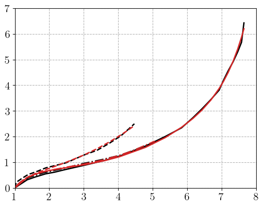

import jax
jax.config.update("jax_platform_name", "cpu")
from pathlib import Path
from time import time
import matplotlib.pyplot as plt
import numpy as np
import equinox as eqx
from optax.tree_utils import tree_scale
import jax.numpy as jnp
from jaxmat.loader import ImposedLoading, global_solve
from jaxmat.tensors import SymmetricTensor2
import jaxmat.materials as jm
current_path = Path().resolve()
data = np.loadtxt(current_path / "../_data/Treloar_rubber.csv", skiprows=1, delimiter=",")
stress_data = []
load_data = []
for i in range(3):
load_data.append(data[data[:,2*i]!=np.inf, 2*i])
stress_data.append(data[data[:,2*i]!=np.inf, 2*i+1])
def plot_results(ax, load, results, **kwargs):
styles= ["-", "-.", "--"]
for lamb, res, style in zip(load, results, styles):
ax.plot(lamb, res, style, **kwargs)
# @eqx.filter_jit
def solve_hyperelasticity(material, loadings):
results = []
for loading in loadings:
Nbatch = len(loading.eps_vals)
state = material.init_state(Nbatch)
F0 = state.F
dt = 0.0
F_sol, state_sol, _ = global_solve(F0, state, loading, material, dt)
# print(F_sol)
results.append(state_sol.PK1[:,0,0])
return results
lamb_list = jnp.asarray(load_data[0])
# lamb_list = jnp.linspace(1.0, 8.0, 51)
loading_uni = ImposedLoading("finite_strain", FXX=lamb_list, FYY=1/jnp.sqrt(lamb_list), FZZ=1/jnp.sqrt(lamb_list))
lamb_list = jnp.asarray(load_data[1])
# lamb_list = jnp.linspace(1.0, 8.0, 51)
loading_simple = ImposedLoading(
"finite_strain", FXX=lamb_list, FYY=jnp.ones_like(lamb_list), FZZ=1/lamb_list
)
lamb_list = jnp.asarray(load_data[2])
# lamb_list = jnp.linspace(1.0, 6, 51)
loading_equiax = ImposedLoading("finite_strain", FXX=lamb_list, FYY=lamb_list, FZZ=1/lamb_list**2)
loadings = [loading_uni, loading_simple, loading_equiax]
load_data_res= [l.eps_vals[:,0,0] for l in loadings]
P_ = []
for F_, F, P in zip(load_data_res, load_data, stress_data):
P_.append(jnp.interp(F_,F, P))
def eval_loss(results, stress_data):
return sum([jnp.mean(jnp.square(P1 - P1_data)) for (P1, P1_data) in zip(results, stress_data)])
key = jax.random.PRNGKey(1)
# scale_mat = None
scale_mat = jm.Hyperelasticity(
jm.CompressibleOgden(mu=1.0, alpha=5.0, kappa=1e3))
# scale_mat = jm.Hyperelasticity(
# jm.CompressibleOgden(mu=jnp.asarray([0.1, 0.2]), alpha=jnp.asarray([2.0, 4.0]), kappa=1e3))
def rescale(scaled_material):
if scale_mat is None:
return scaled_material
else:
return jax.tree_util.tree_map(lambda p, s: p * s, scaled_material, scale_mat)
def compute_loss(scaled_material, loadings):
material=rescale(scaled_material)
results = solve_hyperelasticity(material, loadings)
loss = eval_loss(results, P_)
return loss, results
loss_grad = jax.value_and_grad(compute_loss, argnums=0, has_aux=True)
N = 4
mus = jax.random.lognormal(key, shape=(N,))
alphas = jax.random.normal(key, shape=(N,))
# alphas = alphas.at[0].set(-alphas[0])
print(alphas)
scaled_mat = jm.Hyperelasticity(
jm.CompressibleOgden(mu=mus, alpha=alphas, kappa=1))
scaled_mat = jax.tree.map(lambda x: jnp.asarray(x, dtype=jnp.float64), scaled_mat) # force strong type for optax
results = solve_hyperelasticity(rescale(scaled_mat), loadings)
fig, ax = plt.subplots()
plot_results(ax, load_data_res, P_, color="k")
plot_results(ax, load_data_res, results, color="C2")
[-1.18428442 -0.11617041 0.17269028 0.95730718]
import optimistix as optx
import lineax as lx
solver = optx.LevenbergMarquardt(rtol=1e-4, atol=1e-4,
linear_solver=lx.AutoLinearSolver(well_posed=False),
verbose=frozenset({"loss", "step_size"}))
@eqx.filter_jit
def loss(scaled_material, loadings):
material=rescale(scaled_material)
results = solve_hyperelasticity(material, loadings)
return [(P1 - P1_data)/jnp.max(P1_data) for (P1, P1_data) in zip(results, P_)], results
new_material = tree_scale(1.0, scaled_mat)
print(rescale(new_material).potential.mu)
print(rescale(new_material).potential.alpha)
[0.30596504 0.89032349 1.18849795 2.6046731 ]
[-5.92142211 -0.58085204 0.8634514 4.7865359 ]
# import optax
# # Define optimizer
# start_learning_rate = 0.01
# optimizer = optax.adam(start_learning_rate)
# opt_state = optimizer.init(scaled_mat)
# new_material = tree_scale(1.0, scaled_mat)
# niter_max = 200
# training_loops = 2
# for training in range(training_loops):
# for i in range(niter_max+1):
# (loss, results), dloss = loss_grad(new_material, loadings)
# updates, opt_state = optimizer.update(dloss, opt_state)
# new_material = optax.apply_updates(new_material, updates)
# print(f"Iteration {i} RMS Loss = {jnp.sqrt(loss)}")
# # new_material = tree_add(new_material, tree_scale(-learning_rate, dloss))
# # new_material = jax.tree.map(lambda x: jnp.maximum(x, 0), new_material)
# psi_new = rescale(new_material).potential
# # print(f" c1 = {psi_new.c1}, c2 = {psi_new.c2}, Jm = {psi_new.Jm}")
# # print(f" c1 = {psi_new.c1}, c2 = {psi_new.c2}")
# print(f" mu = {psi_new.mu} alpha = {psi_new.alpha}")
# new_material = rescale(new_material)
# plt.show()
sol = optx.least_squares(loss, solver, new_material, loadings, has_aux=True, throw=False, max_steps=500)
Loss on this step: 156158480601.91428, Step size: 1.0
Loss on this step: 13.405726064418284, Step size: 3.5
Loss on this step: 1.074946937651365, Step size: 3.5
Loss on this step: 0.8009349557236617, Step size: 3.5
Loss on this step: 0.10708923364461266, Step size: 3.5
Loss on this step: 0.5928150492255324, Step size: 0.875
Loss on this step: 0.24663250768630973, Step size: 0.21875
Loss on this step: 0.06702776986802814, Step size: 0.21875
Loss on this step: 0.05687983965109506, Step size: 0.21875
Loss on this step: 0.047118825475906366, Step size: 0.21875
Loss on this step: 0.038219319355312545, Step size: 0.21875
Loss on this step: 0.031213624920917758, Step size: 0.21875
Loss on this step: 0.026782852547548225, Step size: 0.21875
Loss on this step: 0.02436257184129796, Step size: 0.21875
Loss on this step: 0.02298416386687912, Step size: 0.21875
Loss on this step: 0.02209361782139987, Step size: 0.21875
Loss on this step: 0.021458989973802335, Step size: 0.21875
Loss on this step: 0.020978210226039462, Step size: 0.21875
Loss on this step: 0.020599263120875684, Step size: 0.21875
Loss on this step: 0.02029227546742895, Step size: 0.21875
Loss on this step: 0.020038598609085256, Step size: 0.21875
Loss on this step: 0.019825854030429774, Step size: 0.21875
Loss on this step: 0.019645415680465805, Step size: 0.765625
Loss on this step: 0.019258416937521006, Step size: 0.765625
Loss on this step: 0.018960751589362113, Step size: 0.765625
Loss on this step: 0.018767043151474, Step size: 0.765625
Loss on this step: 0.018636957253653334, Step size: 0.765625
Loss on this step: 0.01854667737922365, Step size: 0.765625
Loss on this step: 0.018482337308755033, Step size: 2.6796875
Loss on this step: 0.018383381285514745, Step size: 2.6796875
Loss on this step: 0.018327363364446292, Step size: 2.6796875
Loss on this step: 0.01830011736402698, Step size: 9.37890625
Loss on this step: 0.018248270047560106, Step size: 32.826171875
Loss on this step: 0.023198194856976165, Step size: 8.20654296875
Loss on this step: 0.018140725723493997, Step size: 28.722900390625
Loss on this step: 0.022331652636417197, Step size: 7.18072509765625
Loss on this step: 0.017883795173992283, Step size: 7.18072509765625
Loss on this step: 0.018581310161070733, Step size: 1.7951812744140625
Loss on this step: 0.017710919682128488, Step size: 1.7951812744140625
Loss on this step: 0.017609977194082485, Step size: 1.7951812744140625
Loss on this step: 0.017530014651961256, Step size: 1.7951812744140625
Loss on this step: 0.0174648238345921, Step size: 1.7951812744140625
Loss on this step: 0.017412596181296168, Step size: 1.7951812744140625
Loss on this step: 0.01737122844872678, Step size: 1.7951812744140625
Loss on this step: 0.017338559312643415, Step size: 1.7951812744140625
Loss on this step: 0.01731264745978821, Step size: 1.7951812744140625
Loss on this step: 0.017291905449714484, Step size: 1.7951812744140625
Loss on this step: 0.01727510155069448, Step size: 6.283134460449219
Loss on this step: 0.017245228908679987, Step size: 6.283134460449219
Loss on this step: 0.017217759890877343, Step size: 6.283134460449219
Loss on this step: 0.017200792914301013, Step size: 6.283134460449219
Loss on this step: 0.01718826842363776, Step size: 21.990970611572266
Loss on this step: 0.017160845304121763, Step size: 76.96839714050293
Loss on this step: 0.017091265161250573, Step size: 76.96839714050293
Loss on this step: 0.017020160110851904, Step size: 76.96839714050293
Loss on this step: 0.016945797761796968, Step size: 76.96839714050293
Loss on this step: 0.01687026929813604, Step size: 76.96839714050293
Loss on this step: 0.016795668295001603, Step size: 76.96839714050293
Loss on this step: 0.016724528944765032, Step size: 76.96839714050293
Loss on this step: 0.016660740691836498, Step size: 76.96839714050293
Loss on this step: 0.01661192726491101, Step size: 76.96839714050293
Loss on this step: 0.01659637616600341, Step size: 76.96839714050293
Loss on this step: 0.01666720002268053, Step size: 19.242099285125732
Loss on this step: 0.016318608435754504, Step size: 19.242099285125732
Loss on this step: 0.016267984459498175, Step size: 19.242099285125732
Loss on this step: 0.016222343066389495, Step size: 19.242099285125732
Loss on this step: 0.016179107276435446, Step size: 19.242099285125732
Loss on this step: 0.016134828673068348, Step size: 19.242099285125732
Loss on this step: 0.016088506547965977, Step size: 19.242099285125732
Loss on this step: 0.01603979235854649, Step size: 19.242099285125732
Loss on this step: 0.015989057764245362, Step size: 19.242099285125732
Loss on this step: 0.015938278112271845, Step size: 19.242099285125732
Loss on this step: 0.015893724006291864, Step size: 19.242099285125732
Loss on this step: 0.015874069384509543, Step size: 19.242099285125732
Loss on this step: 0.015936925636732522, Step size: 4.810524821281433
Loss on this step: 0.015673381023812157, Step size: 16.836836874485016
Loss on this step: 0.015880921258174894, Step size: 4.209209218621254
Loss on this step: 0.015643910723062145, Step size: 4.209209218621254
Loss on this step: 0.015612292152566898, Step size: 4.209209218621254
Loss on this step: 0.015578784005863114, Step size: 4.209209218621254
Loss on this step: 0.015543113790568263, Step size: 4.209209218621254
Loss on this step: 0.01550502811221763, Step size: 4.209209218621254
Loss on this step: 0.015464261074462339, Step size: 4.209209218621254
Loss on this step: 0.015420537811450944, Step size: 4.209209218621254
Loss on this step: 0.015373581328752257, Step size: 4.209209218621254
Loss on this step: 0.015323126158773886, Step size: 4.209209218621254
Loss on this step: 0.015268940585960565, Step size: 4.209209218621254
Loss on this step: 0.01521085863305613, Step size: 4.209209218621254
Loss on this step: 0.015148820301242249, Step size: 4.209209218621254
Loss on this step: 0.01508291229187001, Step size: 4.209209218621254
Loss on this step: 0.015013390751354647, Step size: 4.209209218621254
Loss on this step: 0.014940655762411917, Step size: 4.209209218621254
Loss on this step: 0.014865147207859423, Step size: 4.209209218621254
Loss on this step: 0.01478716527444702, Step size: 4.209209218621254
Loss on this step: 0.01470669335644452, Step size: 4.209209218621254
Loss on this step: 0.014623363125520253, Step size: 4.209209218621254
Loss on this step: 0.014536649159579813, Step size: 4.209209218621254
Loss on this step: 0.014446206405122676, Step size: 4.209209218621254
Loss on this step: 0.014352141646414544, Step size: 4.209209218621254
Loss on this step: 0.014255078632716264, Step size: 4.209209218621254
Loss on this step: 0.014156034427272474, Step size: 4.209209218621254
Loss on this step: 0.014056209701702679, Step size: 4.209209218621254
Loss on this step: 0.01395678749668139, Step size: 4.209209218621254
Loss on this step: 0.013858791606622177, Step size: 4.209209218621254
Loss on this step: 0.01376301618182628, Step size: 4.209209218621254
Loss on this step: 0.013670014027124044, Step size: 4.209209218621254
Loss on this step: 0.013580122131493401, Step size: 4.209209218621254
Loss on this step: 0.013493504279550634, Step size: 4.209209218621254
Loss on this step: 0.013410196478448879, Step size: 4.209209218621254
Loss on this step: 0.01333014726705912, Step size: 4.209209218621254
Loss on this step: 0.013253249794063558, Step size: 4.209209218621254
Loss on this step: 0.013179365470931464, Step size: 4.209209218621254
Loss on this step: 0.013108340398444806, Step size: 4.209209218621254
Loss on this step: 0.013040016187646735, Step size: 4.209209218621254
Loss on this step: 0.01297423671539818, Step size: 4.209209218621254
Loss on this step: 0.012910852074212819, Step size: 4.209209218621254
Loss on this step: 0.012849720662079999, Step size: 4.209209218621254
Loss on this step: 0.012790710084110177, Step size: 4.209209218621254
Loss on this step: 0.012733697323667376, Step size: 4.209209218621254
Loss on this step: 0.01267856848528031, Step size: 4.209209218621254
Loss on this step: 0.012625218305101151, Step size: 4.209209218621254
Loss on this step: 0.012573549549950342, Step size: 4.209209218621254
Loss on this step: 0.012523472380358861, Step size: 4.209209218621254
Loss on this step: 0.012474903720310857, Step size: 4.209209218621254
Loss on this step: 0.012427766658220292, Step size: 4.209209218621254
Loss on this step: 0.01238198989069075, Step size: 4.209209218621254
Loss on this step: 0.01233750721374623, Step size: 4.209209218621254
Loss on this step: 0.012294257061214996, Step size: 4.209209218621254
Loss on this step: 0.012252182089206086, Step size: 4.209209218621254
Loss on this step: 0.01221122880203241, Step size: 4.209209218621254
Loss on this step: 0.012171347216763623, Step size: 4.209209218621254
Loss on this step: 0.012132490562272015, Step size: 4.209209218621254
Loss on this step: 0.012094615008914398, Step size: 4.209209218621254
Loss on this step: 0.012057679425834236, Step size: 4.209209218621254
Loss on this step: 0.012021645162320052, Step size: 4.209209218621254
Loss on this step: 0.011986475851073342, Step size: 4.209209218621254
Loss on this step: 0.011952137230308168, Step size: 4.209209218621254
Loss on this step: 0.011918596983275147, Step size: 4.209209218621254
Loss on this step: 0.011885824592499154, Step size: 4.209209218621254
Loss on this step: 0.011853791207773579, Step size: 4.209209218621254
Loss on this step: 0.011822469525961164, Step size: 4.209209218621254
Loss on this step: 0.011791833681977178, Step size: 4.209209218621254
Loss on this step: 0.011761859148399178, Step size: 4.209209218621254
Loss on this step: 0.011732522645038901, Step size: 4.209209218621254
Loss on this step: 0.011703802055067316, Step size: 4.209209218621254
Loss on this step: 0.011675676348729033, Step size: 4.209209218621254
Loss on this step: 0.01164812551287798, Step size: 4.209209218621254
Loss on this step: 0.011621130486603926, Step size: 4.209209218621254
Loss on this step: 0.011594673102071946, Step size: 4.209209218621254
Loss on this step: 0.011568736028972008, Step size: 4.209209218621254
Loss on this step: 0.011543302724784047, Step size: 4.209209218621254
Loss on this step: 0.01151835738694906, Step size: 4.209209218621254
Loss on this step: 0.011493884910351417, Step size: 4.209209218621254
Loss on this step: 0.011469870846757595, Step size: 4.209209218621254
Loss on this step: 0.011446301367539734, Step size: 4.209209218621254
Loss on this step: 0.011423163229221284, Step size: 4.209209218621254
Loss on this step: 0.01140044374076945, Step size: 4.209209218621254
Loss on this step: 0.011378130734039066, Step size: 4.209209218621254
Loss on this step: 0.011356212535301667, Step size: 4.209209218621254
Loss on this step: 0.011334677939633487, Step size: 4.209209218621254
Loss on this step: 0.01131351618612199, Step size: 4.209209218621254
Loss on this step: 0.011292716934612538, Step size: 4.209209218621254
Loss on this step: 0.011272270245608217, Step size: 4.209209218621254
Loss on this step: 0.011252166558815183, Step size: 4.209209218621254
Loss on this step: 0.011232396674697026, Step size: 4.209209218621254
Loss on this step: 0.011212951737868047, Step size: 4.209209218621254
Loss on this step: 0.011193823218668988, Step size: 4.209209218621254
Loss on this step: 0.011175002899427062, Step size: 4.209209218621254
Loss on this step: 0.011156482859027662, Step size: 4.209209218621254
Loss on this step: 0.01113825545837933, Step size: 4.209209218621254
Loss on this step: 0.011120313327995575, Step size: 4.209209218621254
Loss on this step: 0.011102649356262947, Step size: 4.209209218621254
Loss on this step: 0.011085256677527458, Step size: 4.209209218621254
Loss on this step: 0.011068128660467882, Step size: 4.209209218621254
Loss on this step: 0.011051258898317203, Step size: 4.209209218621254
Loss on this step: 0.011034641199013288, Step size: 4.209209218621254
Loss on this step: 0.011018269575995275, Step size: 4.209209218621254
Loss on this step: 0.011002138239165061, Step size: 4.209209218621254
Loss on this step: 0.010986241587521603, Step size: 4.209209218621254
Loss on this step: 0.010970574199549202, Step size: 4.209209218621254
Loss on this step: 0.01095513082773835, Step size: 4.209209218621254
Loss on this step: 0.010939906389315437, Step size: 4.209209218621254
Loss on this step: 0.010924895961311167, Step size: 4.209209218621254
Loss on this step: 0.010910094774786366, Step size: 4.209209218621254
Loss on this step: 0.010895498204593386, Step size: 4.209209218621254
Loss on this step: 0.010881101769410921, Step size: 4.209209218621254
Loss on this step: 0.01086690112117549, Step size: 4.209209218621254
Loss on this step: 0.010852892043956418, Step size: 4.209209218621254
Loss on this step: 0.010839070444687151, Step size: 4.209209218621254
Loss on this step: 0.010825432353191156, Step size: 4.209209218621254
Loss on this step: 0.010811973913912152, Step size: 4.209209218621254
Loss on this step: 0.01079869138204708, Step size: 4.209209218621254
Loss on this step: 0.01078558112003196, Step size: 4.209209218621254
Loss on this step: 0.01077263959729225, Step size: 4.209209218621254
Loss on this step: 0.010759863379272138, Step size: 4.209209218621254
Loss on this step: 0.010747249128401559, Step size: 4.209209218621254
Loss on this step: 0.010734793600669647, Step size: 4.209209218621254
Loss on this step: 0.010722493641214297, Step size: 4.209209218621254
Loss on this step: 0.010710346179193324, Step size: 4.209209218621254
Loss on this step: 0.010698348230950113, Step size: 4.209209218621254
Loss on this step: 0.010686496888844434, Step size: 4.209209218621254
Loss on this step: 0.010674789327518995, Step size: 4.209209218621254
Loss on this step: 0.01066322279143999, Step size: 4.209209218621254
Loss on this step: 0.010651794602555942, Step size: 4.209209218621254
Loss on this step: 0.010640502147860024, Step size: 4.209209218621254
Loss on this step: 0.010629342886533645, Step size: 4.209209218621254
Loss on this step: 0.010618314339092435, Step size: 4.209209218621254
Loss on this step: 0.010607414091553073, Step size: 4.209209218621254
Loss on this step: 0.010596639792007995, Step size: 4.209209218621254
Loss on this step: 0.010585989145822657, Step size: 4.209209218621254
Loss on this step: 0.010575459916543524, Step size: 4.209209218621254
Loss on this step: 0.010565049922539562, Step size: 4.209209218621254
Loss on this step: 0.01055475703773101, Step size: 4.209209218621254
Loss on this step: 0.010544579184365821, Step size: 4.209209218621254
Loss on this step: 0.010534514340292579, Step size: 4.209209218621254
Loss on this step: 0.010524560526959499, Step size: 4.209209218621254
Loss on this step: 0.010514715818327192, Step size: 4.209209218621254
Loss on this step: 0.010504978328459955, Step size: 4.209209218621254
Loss on this step: 0.010495346222301465, Step size: 4.209209218621254
Loss on this step: 0.010485817702164158, Step size: 4.209209218621254
Loss on this step: 0.010476391013223034, Step size: 4.209209218621254
Loss on this step: 0.010467064446019454, Step size: 4.209209218621254
Loss on this step: 0.010457836329047893, Step size: 4.209209218621254
Loss on this step: 0.010448705025589863, Step size: 4.209209218621254
Loss on this step: 0.01043966893619101, Step size: 4.209209218621254
Loss on this step: 0.010430726501428586, Step size: 4.209209218621254
Loss on this step: 0.010421876191895803, Step size: 4.209209218621254
Loss on this step: 0.010413116519015336, Step size: 4.209209218621254
Loss on this step: 0.01040444602046519, Step size: 4.209209218621254
Loss on this step: 0.010395863270765986, Step size: 4.209209218621254
Loss on this step: 0.010387366870922858, Step size: 4.209209218621254
Loss on this step: 0.010378955460490048, Step size: 4.209209218621254
Loss on this step: 0.010370627700276231, Step size: 4.209209218621254
Loss on this step: 0.010362382283907685, Step size: 4.209209218621254
Loss on this step: 0.010354217930079988, Step size: 4.209209218621254
Loss on this step: 0.010346133387456293, Step size: 4.209209218621254
Loss on this step: 0.010338127430755522, Step size: 4.209209218621254
Loss on this step: 0.010330198859838316, Step size: 4.209209218621254
Loss on this step: 0.010322346500887359, Step size: 4.209209218621254
Loss on this step: 0.010314569200667352, Step size: 4.209209218621254
Loss on this step: 0.01030686583411235, Step size: 4.209209218621254
Loss on this step: 0.010299235300182837, Step size: 4.209209218621254
Loss on this step: 0.010291676511793987, Step size: 4.209209218621254
Loss on this step: 0.010284188409112755, Step size: 4.209209218621254
Loss on this step: 0.010276769963835482, Step size: 4.209209218621254
Loss on this step: 0.010269420147286637, Step size: 4.209209218621254
Loss on this step: 0.010262137966674446, Step size: 4.209209218621254
Loss on this step: 0.01025492245271155, Step size: 4.209209218621254
Loss on this step: 0.010247772639235585, Step size: 4.209209218621254
Loss on this step: 0.010240687589755118, Step size: 4.209209218621254
Loss on this step: 0.010233666379440785, Step size: 4.209209218621254
Loss on this step: 0.010226708109402915, Step size: 4.209209218621254
Loss on this step: 0.010219811893407114, Step size: 4.209209218621254
Loss on this step: 0.010212976869912923, Step size: 4.209209218621254
Loss on this step: 0.010206202172614458, Step size: 4.209209218621254
Loss on this step: 0.010199486978675846, Step size: 4.209209218621254
Loss on this step: 0.010192830467988972, Step size: 4.209209218621254
Loss on this step: 0.01018623182606006, Step size: 4.209209218621254
Loss on this step: 0.010179690276861067, Step size: 4.209209218621254
Loss on this step: 0.010173205036645946, Step size: 4.209209218621254
Loss on this step: 0.010166775348558999, Step size: 4.209209218621254
Loss on this step: 0.010160400464117874, Step size: 4.209209218621254
Loss on this step: 0.010154079653779877, Step size: 4.209209218621254
Loss on this step: 0.010147812193461987, Step size: 4.209209218621254
Loss on this step: 0.010141597381501982, Step size: 4.209209218621254
Loss on this step: 0.01013543452523739, Step size: 4.209209218621254
Loss on this step: 0.010129322936272011, Step size: 4.209209218621254
Loss on this step: 0.010123261954634241, Step size: 4.209209218621254
Loss on this step: 0.010117250921094788, Step size: 4.209209218621254
Loss on this step: 0.010111289182240727, Step size: 4.209209218621254
Loss on this step: 0.01010537611937095, Step size: 4.209209218621254
Loss on this step: 0.010099511109238941, Step size: 4.209209218621254
Loss on this step: 0.010093693518452075, Step size: 4.209209218621254
Loss on this step: 0.010087922766790238, Step size: 4.209209218621254
Loss on this step: 0.010082198247867758, Step size: 14.732232265174389
Loss on this step: 0.010071697312991483, Step size: 14.732232265174389
Loss on this step: 0.010049630676556131, Step size: 14.732232265174389
Loss on this step: 0.010030978268531743, Step size: 14.732232265174389
Loss on this step: 0.010012457085553825, Step size: 14.732232265174389
Loss on this step: 0.009994489949014487, Step size: 14.732232265174389
Loss on this step: 0.009976991734100707, Step size: 14.732232265174389
Loss on this step: 0.009959951072443426, Step size: 14.732232265174389
Loss on this step: 0.00994334699909746, Step size: 14.732232265174389
Loss on this step: 0.009927162750135174, Step size: 14.732232265174389
Loss on this step: 0.009911381006239403, Step size: 14.732232265174389
Loss on this step: 0.009895985530493196, Step size: 14.732232265174389
Loss on this step: 0.009880961503244872, Step size: 14.732232265174389
Loss on this step: 0.00986629499209306, Step size: 14.732232265174389
Loss on this step: 0.009851971639806206, Step size: 14.732232265174389
Loss on this step: 0.009837979335453093, Step size: 14.732232265174389
Loss on this step: 0.00982430641313367, Step size: 14.732232265174389
Loss on this step: 0.009810939998421813, Step size: 14.732232265174389
Loss on this step: 0.009797870029151695, Step size: 14.732232265174389
Loss on this step: 0.009785086275333187, Step size: 14.732232265174389
Loss on this step: 0.009772578281302418, Step size: 14.732232265174389
Loss on this step: 0.009760337172788425, Step size: 14.732232265174389
Loss on this step: 0.009748353408283712, Step size: 14.732232265174389
Loss on this step: 0.00973661912730927, Step size: 14.732232265174389
Loss on this step: 0.009725125829270521, Step size: 14.732232265174389
Loss on this step: 0.009713865157350206, Step size: 14.732232265174389
Loss on this step: 0.009702830969199576, Step size: 14.732232265174389
Loss on this step: 0.00969201448865793, Step size: 14.732232265174389
Loss on this step: 0.009681410402140243, Step size: 14.732232265174389
Loss on this step: 0.00967101135618463, Step size: 14.732232265174389
Loss on this step: 0.00966081147942173, Step size: 14.732232265174389
Loss on this step: 0.009650804005762768, Step size: 14.732232265174389
Loss on this step: 0.009640984545914243, Step size: 14.732232265174389
Loss on this step: 0.009631346924207697, Step size: 14.732232265174389
Loss on this step: 0.009621885750302234, Step size: 14.732232265174389
Loss on this step: 0.009612595303261116, Step size: 14.732232265174389
Loss on this step: 0.009603472126881367, Step size: 14.732232265174389
Loss on this step: 0.009594509836809467, Step size: 14.732232265174389
Loss on this step: 0.009585704959871275, Step size: 14.732232265174389
Loss on this step: 0.009577054711070109, Step size: 14.732232265174389
Loss on this step: 0.009568552685547918, Step size: 14.732232265174389
Loss on this step: 0.009560194557467701, Step size: 14.732232265174389
Loss on this step: 0.009551978998997459, Step size: 14.732232265174389
Loss on this step: 0.009543898159990901, Step size: 14.732232265174389
Loss on this step: 0.00953595445450609, Step size: 14.732232265174389
Loss on this step: 0.009528138038200084, Step size: 14.732232265174389
Loss on this step: 0.009520450274077004, Step size: 14.732232265174389
Loss on this step: 0.009512883826167632, Step size: 14.732232265174389
Loss on this step: 0.009505441925062598, Step size: 14.732232265174389
Loss on this step: 0.009498112596256745, Step size: 14.732232265174389
Loss on this step: 0.009490899291896247, Step size: 14.732232265174389
Loss on this step: 0.009483795872557476, Step size: 14.732232265174389
Loss on this step: 0.009476808286757501, Step size: 14.732232265174389
Loss on this step: 0.009469921373968118, Step size: 14.732232265174389
Loss on this step: 0.009463143427079575, Step size: 14.732232265174389
Loss on this step: 0.009456463617264738, Step size: 14.732232265174389
Loss on this step: 0.009449881662192891, Step size: 14.732232265174389
Loss on this step: 0.009443399480661217, Step size: 14.732232265174389
Loss on this step: 0.00943700807682617, Step size: 14.732232265174389
Loss on this step: 0.009430712957003555, Step size: 14.732232265174389
Loss on this step: 0.009424504992752342, Step size: 14.732232265174389
Loss on this step: 0.009418384031911689, Step size: 14.732232265174389
Loss on this step: 0.00941234875831052, Step size: 14.732232265174389
Loss on this step: 0.009406405872836868, Step size: 14.732232265174389
Loss on this step: 0.009400532593914348, Step size: 14.732232265174389
Loss on this step: 0.009394751934448409, Step size: 14.732232265174389
Loss on this step: 0.009389046104918145, Step size: 14.732232265174389
Loss on this step: 0.00938341478565928, Step size: 14.732232265174389
Loss on this step: 0.009377860041145675, Step size: 14.732232265174389
Loss on this step: 0.009372384782761846, Step size: 14.732232265174389
Loss on this step: 0.00936697778038673, Step size: 14.732232265174389
Loss on this step: 0.00936164400751146, Step size: 14.732232265174389
Loss on this step: 0.009356376897974791, Step size: 14.732232265174389
Loss on this step: 0.009351181592552618, Step size: 14.732232265174389
Loss on this step: 0.009346046680346552, Step size: 14.732232265174389
Loss on this step: 0.009340984312028696, Step size: 14.732232265174389
Loss on this step: 0.009335984542940724, Step size: 14.732232265174389
Loss on this step: 0.009335830593182345, Step size: 51.56281292811036
Loss on this step: 0.009335830295717894, Step size: 180.46984524838626
fig, ax = plt.subplots()
results = sol.aux
plot_results(ax, load_data_res,stress_data, color="k")
plot_results(ax, load_data_res,results, color="C3")
plt.show()
